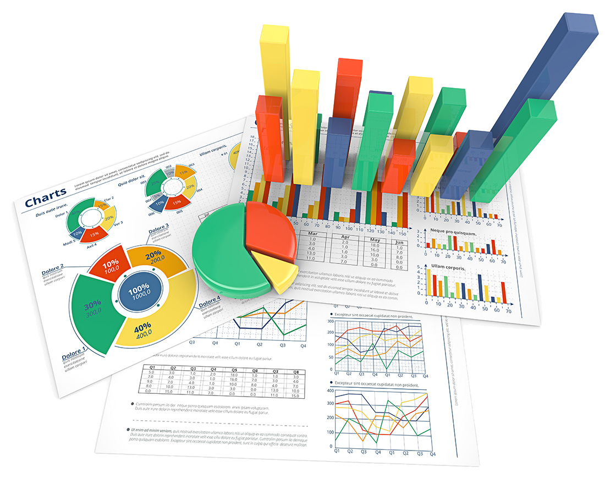

Hola, soy Yuliana Aparicio

Soy una estudiante apasionado de Ingeniería Financiera y Administración de Empresas. Estoy dedicando tiempo a aprender varios idiomas, como inglés, francés y alemán, lo que me permite comunicarme efectivamente en contextos internacionales. Además de mis estudios, estoy enfocado en mejorar mis habilidades de programación, especialmente en HTML. A través de cursos constantes, estoy expandiendo mi conocimiento en programación, contabilidad, finanzas y análisis de datos. Mi objetivo es mantenerme actualizado en los avances y mejores prácticas de estos campos. Mi enfoque se centra en resolver problemas, analizar datos y tomar decisiones informadas.
Programación
La programación es fundamental en el mundo de los negocios, ya que brinda la capacidad de automatizar procesos, desarrollar aplicaciones y análisis de datos, lo que permite la eficiencia operativa, la toma de decisiones basada en datos y la innovación tecnológica en un entorno empresarial en constante evolución.
Idiomas
Los idiomas en el mundo de los negocios son cruciales, ya que permite una comunicación efectiva y la apertura a oportunidades internacionales, facilitando la conexión con clientes, socios comerciales y mercados globales.
Estudiante
Estudiante de Ingeniería Financiera y Administración de Empresas, apasionada por el mundo de las finanzas y los negocios.